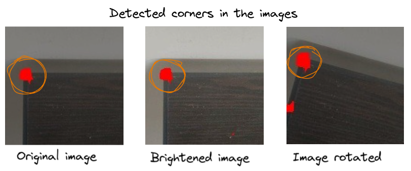

Harris Corner Detection (Practical)
For the final part in this tutorial let's find corners in a sample image and test out the earlier statements made in previous sections about Harris Corner detection being resilant to change in illumincation, rotation and translation using the images given below,

In the above image we would like to detect the corner (enclosed within a circle) in various settings of the same image. Let's use OpenCV's API to perform this task. Let's use the code below to get the output.
OpenCV's API Harris Corner Detection algorithm cv2.cornerHarris() have the following arguments,
- src: Input single-channel 8-bit or floating-point image.
- dst: Image to store the Harris detector responses. It has the type CV_32FC1 and the same size as src .
- blockSize: Neighborhood size (window size).
- k: Harris detector free parameter. See the formula here.
- borderType:Pixel extrapolation method.
The above information has been taken from the OpenCV's documentation. Using the above code we get the following output shown below,

Though we get corners in all the images having different settings of the same image. However, we get bunch of pixels detected as corner near the corner regions in the images. To mitage that we can
use cv2.cornerSubPix() which is method ffor obtaining corners with sub pixel accuracy. It relies on the method of dot product. I will talk more about this with it's maths in future blog
posts. For now, this is it. I hope you have understood how an harris corner detector works, it's theory and how you can use it in practise.